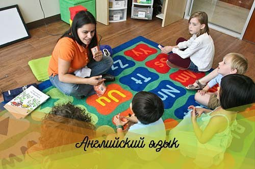

Английский язык
Преимущества изучения английского языка в раннем возрасте:
Чем младше ребенок, тем проще он усваивает языки. Мозг наиболее восприимчив к новым словам, речевым конструкциям, особенностям произношения до 6 лет.
Билингвизм полезен. Дети-билингвы быстрее запоминают и анализируют информацию, проще переключаются на новые задачи и легче концентрируются на их решении.
У детей отсутствует языковой барьер. Мышление развивается параллельно с речью, понятия только формируются и в этом процессе участвуют слова любого слышимого языка, их не приходится «переводить».
Быстрее формируется языковая интуиция. В будущем это языковое чутье позволит ребенку говорить и писать правильнее.
У нас есть два курса изучения английского. Один дополняет другой
1) Игровой:
- В нём нет привычных учебников, рабочих тетрадей и карточек со словами и транскрипциями. Только естественная языковая среда. Интерактивные занятия. Не просто изучение языка, а полноценное общение на нём.
- В помощь: живая беседа и необычные развивающие игрушки, с которыми поиграть тянет даже взрослых.
- Идеально для детей 4-5 лет.
2) Классический:
- Для тех, кому надо подтянуть язык или начать серьёзное обучение с нуля.
- Изучение языка по учебникам, которые написаны носителями языка.
- чтение, устная речь, восприятие на слух, письмо, словарный запас, грамматика и произношение по международным стандартам;
- адаптация детей к новому языковому миру;
- развитие языковых способностей.
Спеши записаться, ведь у нас в группах не более 6 человек для лучшего усвоения материала!
- Ср, Пт 18:00 - 19:00
- Сб 13:15 - 15:00
- 2000 рублей (8 занятий)
- Чтобы узнать подробности, звоните +7 (917) 382-66-26